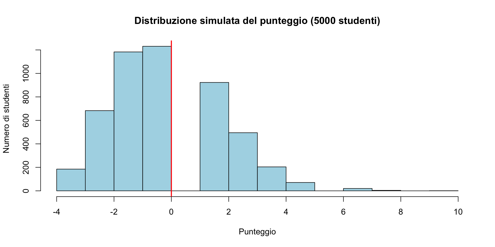

Variabili casuali
Funzioni di variabili casuali e calcoli in R
![]()
11 febbraio 2026
Trasformare i dati, trasformare le domande
Un caso quotidiano
Un vostro collega vi chiede di confrontare le prestazioni di un paziente su due test diversi:
- Test di memoria: punteggio grezzo = 42 (media pop. = 50, DS = 8)
- Test di attenzione: punteggio grezzo = 28 (media pop. = 35, DS = 5)
In quale dei due il paziente è “più deficitario”?
Non potete rispondere confrontando 42 con 28 — le scale sono diverse. Dovete trasformare i punteggi in una scala comune.
Memoria: \(z = (42 - 50)/8 = -1.00\).
Attenzione: \(z = (28 - 35)/5 = -1.40\).
Il paziente è più deficitario nell’attenzione. Questa è una trasformazione di variabile casuale — il tema di questa seconda parte.
Obiettivi della lezione
- Capire cosa succede quando trasformiamo una variabile casuale.
- Calcolare media e varianza usando R.
- Verificare i calcoli con simulazioni.
Un’idea semplice
Se \(X\) è una variabile casuale e applichiamo una funzione \(g\), otteniamo una nuova variabile casuale:
\[ Y = g(X). \]
Esempio: se \(X\) è un punteggio grezzo, possiamo creare \(Y = 2X + 10\).
Perché ci interessa?
In psicologia trasformiamo spesso i dati:
| Trasformazione | Formula | Uso tipico |
|---|---|---|
| Punteggio z | \(Z = \frac{X - \mu}{\sigma}\) | Standardizzare |
| Punteggio T | \(T = 50 + 10Z\) | Scale psicometriche |
| Logaritmo | \(Y = \log(X)\) | Tempi di reazione |
Ogni volta che calcolate un punteggio z, costruite un T-score, o applicate una trasformazione logaritmica, state creando una nuova variabile casuale a partire da una esistente.
La domanda chiave
Se conosco la media di \(X\), posso calcolare facilmente la media di \(Y = g(X)\)?
Dipende dalla funzione.
Caso facile: trasformazioni lineari
Per \(Y = a + bX\), la risposta è sì:
\[ \mathbb{E}(a + bX) = a + b \cdot \mathbb{E}(X). \]
La media “passa attraverso” la trasformazione lineare.
Esempio concreto
Un test ha media \(\mathbb{E}(X) = 25\).
Creiamo \(Y = 10 + 2X\).
Qual è \(\mathbb{E}(Y)\)?
\[ \mathbb{E}(Y) = 10 + 2 \times 25 = 60. \]
Caso difficile: trasformazioni non lineari
Per funzioni come \(\sqrt{X}\) o \(\log(X)\), non possiamo fare lo stesso.
\[ \mathbb{E}[\sqrt{X}] \neq \sqrt{\mathbb{E}[X]}. \]
La media della radice non è la radice della media.
Un esempio numerico
Consideriamo tre valori: \(X = \{1, 4, 9\}\), tutti equiprobabili.
Media di X:
\[ \mathbb{E}(X) = \frac{1 + 4 + 9}{3} = \frac{14}{3} \approx 4.67. \]
Radice della media:
\[ \sqrt{\mathbb{E}(X)} = \sqrt{4.67} \approx 2.16. \]
Continuiamo l’esempio
Media delle radici:
\[ \mathbb{E}(\sqrt{X}) = \frac{\sqrt{1} + \sqrt{4} + \sqrt{9}}{3} = \frac{1 + 2 + 3}{3} = 2. \]
Confronto:
- \(\sqrt{\mathbb{E}(X)} \approx 2.16\).
- \(\mathbb{E}(\sqrt{X}) = 2\).
I due valori sono diversi!
La regola generale (disuguaglianza di Jensen)
Per funzioni concave (come \(\sqrt{x}\) e \(\log(x)\)):
\[ \mathbb{E}[g(X)] \le g(\mathbb{E}[X]). \]
Per funzioni convesse (come \(x^2\)):
\[ \mathbb{E}[g(X)] \ge g(\mathbb{E}[X]). \]
Perché questo conta per la ricerca psicologica
Questa non è solo una curiosità matematica — ha conseguenze pratiche serie.
Esempio: i tempi di reazione (TR) hanno spesso valori estremi che “trascinano” la media aritmetica. La soluzione classica è lavorare con \(\log(\text{TR})\).
Perché questo conta per la ricerca psicologica
Ma se calcolate la media dei log-TR e poi la ritrasformate con l’esponenziale per tornare in millisecondi, non ottenete la media dei TR originali. Ottenete la media geometrica — che è sistematicamente più bassa.
Se non capite questo meccanismo, rischiate di interpretare male i risultati dei vostri studi.
Calcoli in R
Rappresentare una distribuzione discreta in R
In R usiamo due vettori:
x= valori possibili;p= probabilità corrispondenti.
Controllo fondamentale
Le probabilità devono sommare a 1:
Se non otteniamo 1, c’è un errore.
Calcolare la media (valore atteso)
La media è una somma pesata: ogni valore moltiplicato per la sua probabilità.
\[ \mathbb{E}(X) = \sum x_i \cdot p(x_i) \]
In R:
Passo per passo
Cosa fa x * p?
Ogni valore è moltiplicato per la sua probabilità.
sum() somma tutti questi prodotti.
Calcolare la varianza
Formula operativa:
\[ \mathbb{V}(X) = \mathbb{E}(X^2) - [\mathbb{E}(X)]^2 \]
Passo 1: Calcolare \(\mathbb{E}(X^2)\)
Calcolare la varianza (continua)
Passo 2: Applicare la formula
Passo 3: La deviazione standard è la radice
Riassunto dei calcoli
Media Varianza SD
0.400000 0.440000 0.663325 Questi tre numeri riassumono completamente il comportamento del test: punteggio medio atteso, dispersione e dispersione in unità interpretabili.
Perché simulare?
La simulazione ci permette di verificare i calcoli teorici.
Idea: generiamo molti dati casuali e calcoliamo la media campionaria. Deve avvicinarsi alla media teorica.
La funzione sample()
sample() estrae valori casuali da un insieme:
[1] 2 2 0 1 0 0 1 0 0 1replace = TRUE significa “con reinserimento” (possiamo estrarre lo stesso valore più volte).
Simulazione completa
Generiamo 10,000 osservazioni:
Calcoliamo la media del campione:
Confrontiamo con la media teorica (0.40).
Confronto teoria vs simulazione
Teorica Simulata
0.4400000 0.4467626 I valori sono molto simili. Questa convergenza non è un caso: è una conseguenza della legge dei grandi numeri — con molte osservazioni, la media campionaria converge alla media teorica.
Cosa ci insegna la simulazione?
La simulazione rende concreti due concetti teorici:
📌 Valore atteso
È il centro di equilibrio della variabile casuale. Se ripetiamo l’esperimento molte volte, la media dei risultati si avvicina a questo valore.
👉 Nella simulazione: mean(campione) ≈ media teorica.
📌 Varianza
Misura quanto i risultati oscillano attorno al valore atteso.
👉 Nella simulazione: var(campione) ≈ varianza teorica.
🎯 Interpretazione intuitiva
- Il valore atteso è la media a cui tendono i risultati nel lungo periodo.
- La varianza misura quanto sono dispersi i risultati attorno a quella media.
- La simulazione mostra che questi non sono solo calcoli astratti: emergono naturalmente quando ripetiamo l’esperimento molte volte.
👉 La teoria descrive il comportamento limite.
👉 La simulazione lo rende osservabile.
Esercizio 1 — Scala Likert di ansia
In uno studio psicologico, il livello di ansia dei partecipanti viene misurato su una scala di Likert a 5 punti (da 1 = “Per niente ansioso” a 5 = “Estremamente ansioso”).
La distribuzione di probabilità dei punteggi osservati nella popolazione è la seguente:
| Punteggio | 1 | 2 | 3 | 4 | 5 |
|---|---|---|---|---|---|
| Probabilità | 0.10 | 0.25 | 0.35 | 0.20 | 0.10 |
Calcola il valore atteso (media) e la deviazione standard della distribuzione.
Soluzione Esercizio 1
Interpretazione
Il punteggio medio è circa 3 (“moderatamente ansioso”), con una variabilità di circa 1.1 punti.
La distribuzione è leggermente spostata verso il basso rispetto al centro della scala — la maggior parte delle persone riporta un’ansia moderata o bassa.
Esercizio 2 — Verifica mediante simulazione
Genera 5,000 risposte dalla scala Likert dell’esercizio 1.
Confronta la media simulata e quella teorica.
Soluzione Esercizio 2
Come funziona sample()?
Spiegazione:
x = c(1,2,3,4,5)→ possibili valori
size = 5000→ numero di estrazioni
replace = TRUE→ estrai con reinserimento
prob = p→ usa le probabilità date
Interpretazione intuitiva
Immaginate un’urna molto grande in cui la proporzione delle palline rispecchia le probabilità.
Se una probabilità è 0.35, circa il 35% delle palline riporta quel numero.
Estraendo molte volte con reinserimento, le frequenze osservate si avvicineranno a quelle proporzioni.
Esercizio 3 — Un test è equo?
Questo esercizio risponde a una domanda che vi faranno spesso come psicologi:
“Se uno studente risponde a caso, quale punteggio ottiene?”
Se il punteggio atteso a caso è positivo, il test premia la risposta casuale. Se è zero, il test è equo. Se è negativo, il test penalizza il caso.
Capire questo è fondamentale per progettare e valutare test.
Esercizio 3 — Punteggio in un test a scelta multipla
Un test è composto da n = 15 domande, ciascuna con 5 risposte possibili, di cui una sola corretta.
Lo studente risponde completamente a caso a tutte le domande.
Il sistema di punteggio è:
- +1 punto per ogni risposta corretta,
- –0.25 punti per ogni risposta errata,
- 0 punti per ogni risposta non data.
Esercizio 3 — Domande
- Qual è la distribuzione del numero di risposte corrette?
- Calcolare il valore atteso e la deviazione standard del punteggio totale ottenuto dallo studente.
Soluzione Esercizio 3
Distribuzione del numero di risposte corrette
Il numero di risposte corrette \(X\) segue una distribuzione binomiale: \[ X \sim \text{Binom}(n = 15, \, p = 0.2) \] dove \(p = 0.2\) è la probabilità di indovinare una singola domanda per caso.
Passo 1: una singola domanda
Consideriamo una sola domanda.
- Probabilità di rispondere correttamente: \(p = 0.2\).
- Probabilità di rispondere in modo errato: \(1 - p = 0.8\).
Il punteggio per una domanda è:
- +1 se la risposta è corretta;
- –0.25 se la risposta è errata.
Valore atteso per una domanda
Il valore atteso del punteggio per una domanda è quindi:
\[ \mathbb{E}(\text{punteggio per una domanda}) = 1 \cdot 0.2 + (-0.25) \cdot 0.8. \]
Calcoliamo:
\[ \mathbb{E} = 0.2 - 0.2 = 0. \]
In media, una risposta data a caso vale 0 punti.
Passo 2: tutte le 15 domande
Il punteggio totale (\(S\)) è la somma dei punteggi delle singole domande.
Poiché il valore atteso di ogni domanda è 0, per la linearità del valore atteso il valore atteso totale è:
\[ \mathbb{E}(S) = 15 \times 0 = 0. \]
Risultato finale (valore atteso)
\[ \boxed{\mathbb{E}(S) = 0} \]
Uno studente che risponde completamente a caso non guadagna né perde punti in media.
Questo tipo di punteggio è detto “corretto per il caso”: il sistema di penalizzazione è costruito apposta per rendere neutrale il rispondere a caso.
La penalità di
\[-1/(k-1),\] dove \(k\) è il numero di alternative (qui \(-1/4 = -0.25\)) è la formula generale che garantisce questa proprietà.
Esercizio 4 — Simulazione del punteggio del test
Nell’Esercizio 3 abbiamo calcolato teoricamente che:
- punteggio atteso = 0,
- deviazione standard ≈ 1.94.
Ora vogliamo verificare questi risultati con una simulazione.
Simuliamo 5,000 studenti che rispondono completamente a caso a un test di 15 domande.
1️⃣ Qual è il modello probabilistico?
Ogni domanda:
- ha 5 alternative,
- solo 1 è corretta,
- quindi la probabilità di rispondere correttamente a caso è:
\[ p = 0.2. \]
Il numero di risposte corrette \(X\) su 15 domande segue quindi una:
\[ X \sim \text{Binom}(n = 15, p = 0.2). \]
👉 \(X\) è la nostra variabile casuale di base.
2️⃣ Simuliamo il numero di risposte corrette
Simuliamo 5,000 studenti.
Cosa fa questo comando?
- genera 5,000 valori,
- ognuno rappresenta il numero di risposte corrette di uno studente,
- ciascun valore è estratto da una Binomiale(15, 0.2).
Ora abbiamo 5,000 possibili valori di \(X\).
I primi 30 valori sono:
3️⃣ Come si calcola il punteggio?
Regola del test:
- +1 punto per risposta corretta,
- −0.25 punti per risposta sbagliata,
- 15 domande totali.
Se uno studente ha \(X\) risposte corrette:
- risposte sbagliate = \(15 - X\).
Il punteggio totale è:
\[ \text{Punteggio} = 1 \cdot X - 0.25 \cdot (15 - X). \]
4️⃣ Semplifichiamo la formula
\[ \text{Punteggio} = X - 0.25(15 - X). \]
\[ = X - 3.75 + 0.25X \]
\[ = 1.25X - 3.75. \]
👉 Il punteggio è una trasformazione lineare di \(X\).
Questo è importante perché:
Se \(Y = aX + b\), allora
\[ E(Y) = aE(X) + b, \]
\[ Var(Y) = a^2 Var(X). \]
5️⃣ Calcoliamo i punteggi simulati
Applichiamo la formula a tutti i 5,000 studenti:
Ora abbiamo 5,000 punteggi simulati.
I primi valori sono:
Confronto tra teoria e simulazione
Valori teorici:
Valori simulati:
Statistica Teorica Simulata
1 Media 0.000000 -0.040750
2 Deviazione Standard 1.936492 1.949368👉 I risultati della simulazione sono molto vicini ai valori teorici.
Questo è un esempio concreto della Legge dei Grandi Numeri.
Visualizziamo la distribuzione

La linea rossa indica la media teorica (0).
Interpretazione finale
La simulazione ci mostra tre cose importanti:
Il valore atteso è il centro della distribuzione. La media dei punteggi simulati è circa 0.
La deviazione standard misura la dispersione. I punteggi oscillano attorno a 0 con variabilità ≈ 1.94.
Anche chi risponde a caso può fare punti positivi. Ma punteggi molto alti sono rari.
👉 Questo è il principio dello scoring: il sistema deve penalizzare il caso abbastanza da distinguere fortuna da competenza.
Messaggio chiave
- La teoria ci dà le formule per la media e la varianza.
- La simulazione ci mostra che quelle formule descrivono davvero ciò che accade.
- Il punteggio è una trasformazione lineare di una binomiale.
- Media e varianza si trasformano in modo prevedibile.
La probabilità non è solo calcolo simbolico:
è una descrizione quantitativa del comportamento nel lungo periodo.
Esercizio 5 — La scala T in pratica
I punteggi \(X\) a un test di personalità hanno:
- media \(\mathbb{E}(X) = 25\);
- deviazione standard \(\mathrm{SD}(X) = 5\).
Il punteggio viene trasformato nella scala T:
\[ T = 50 + 10 \cdot \frac{X - 25}{5}. \]
Domanda: qual è la media di \(T\)?
Soluzione Esercizio 5
Passo 1: semplificare la formula.
\[ T = 50 + 10 \cdot \frac{X - 25}{5} = 50 + 2(X - 25). \]
Sviluppiamo il prodotto:
\[ T = 50 + 2X - 50 = 2X. \]
Passo 2: usare la regola del valore atteso
Per una trasformazione lineare vale:
\[ \mathbb{E}(a + bX) = a + b\,\mathbb{E}(X). \]
Qui \(T = 2X\), quindi:
\[ \mathbb{E}(T) = 2 \cdot \mathbb{E}(X) = 2 \cdot 25 = 50. \]
\[ \boxed{\mathbb{E}(T) = 50} \]
La media della scala T è 50 — per costruzione.
Verifica con simulazione
Media_T SD_T
50.00776 10.07689 La media è circa 50 e la deviazione standard circa 10: è proprio la scala T standard.
Perché la scala T è così utilizzata in psicologia?
La scala T (media = 50, DS = 10) è usata in molti test clinici e di personalità: MMPI-2, NEO-PI-R, CBCL, SCL-90-R e molti altri.
Ora sapete esattamente cosa significa “un T-score di 65”: è 1.5 deviazioni standard sopra la media, cioè al 93° percentile. E sapete anche perché la trasformazione funziona: è una trasformazione lineare e le proprietà del valore atteso e della varianza garantiscono che la nuova scala abbia i parametri desiderati.
Perché la scala T è così utilizzata in psicologia?
Molti manuali di test indicano un cut-off a T = 65 (1.5 DS sopra la media) come soglia di “significatività clinica” — ora sapete che questa soglia lascia sopra circa il 6.7% della popolazione normativa.
Riepilogo: comandi R essenziali
| Operazione | Codice R |
|---|---|
| Creare vettore | x <- c(1, 2, 3) |
| Somma | sum(x) |
| Media campionaria | mean(x) |
| Varianza campionaria | var(x) |
| Deviazione standard | sd(x) |
Riepilogo: comandi R essenziali
| Operazione | Codice R |
|---|---|
| Campionamento | sample(x, n, replace=TRUE, prob=p) |
| Binomiale | rbinom(n, size, prob) |
| Normale | rnorm(n, mean, sd) |
Il percorso fin qui
Nelle ultime lezioni abbiamo costruito una cassetta degli attrezzi completa:
Lezioni 5-6 — Il linguaggio della probabilità e l’aggiornamento bayesiano.
Lezione 8 — Modelli per conteggi: Bernoulli, Binomiale, Poisson.
Lezione 9 — Modelli per misure continue: Normale e Beta.
Lezione 10 (oggi) — Come sintetizzare e trasformare le distribuzioni: valore atteso, varianza, funzioni di v.c.
Il percorso fin qui
Il passo successivo è capire come due variabili variano insieme — la covarianza e la correlazione — che sono alla base di quasi tutta la statistica psicologica, dalla regressione all’analisi fattoriale.
Riepilogo concettuale
Trasformare una v.c. crea una nuova v.c. con proprietà diverse.
Per trasformazioni lineari: \(\mathbb{E}(a + bX) = a + b\mathbb{E}(X)\).
Per trasformazioni non lineari: \(\mathbb{E}[g(X)] \neq g(\mathbb{E}[X])\).
Media = somma pesata:
sum(x * p).Varianza = \(\mathbb{E}(X^2) - [\mathbb{E}(X)]^2\).
Le simulazioni verificano i calcoli teorici.
Per la prossima lezione
Materiale di studio: https://ccaudek.github.io/utet-prob/
Capitoli da rivedere:
- Cap. 6: Variabili casuali
- Cap. 8: Proprietà delle v.c.
- Cap. 9: Covarianza e correlazione
Prossimo argomento: distribuzioni congiunte e covarianza.